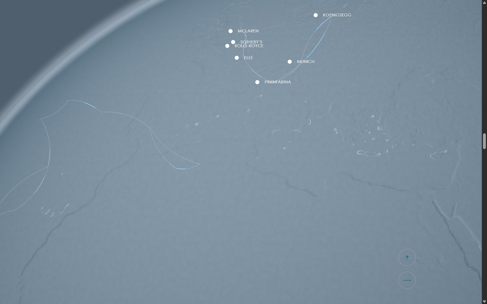

Вариант открывается по ссылке. Оригинальное зеркало не выложено — оно держит корневые пути и работает только в корне сервера, и это полная копия чужого сайта; карточка ведёт на запись о нём.
нетронутое зеркало mont-fort.com
не выложен

контент GD2 разложен по секциям Montfort, только текст + вордмарк GD2
proba/